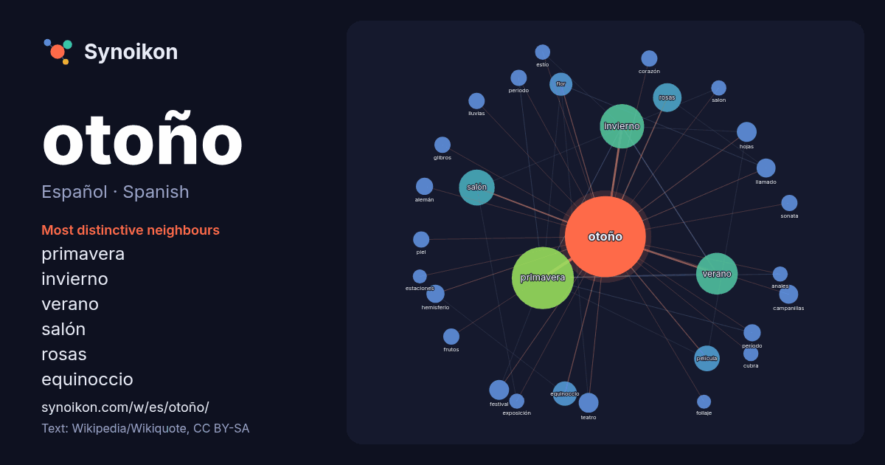

Español · Spanish · word of the day list
otoño
“autumn” · The words found around it in 864 instances from Spanish Wikipedia, Wikiquote.

Most distinctive neighbours
- primavera 104×
- invierno 51×
- verano 39×
- salón 35×
- rosas 21×
- equinoccio 19×
- flor 12×
- campanillas 12×
- hemisferio 11×
- hojas 10×
- película 9.2×
- glibros 9.0×
- sonata 8.8×
- festival 8.8×
- estío 8.0×
- cubra 8.0×
- piel 8.0×
- salon 7.9×
- teatro 7.9×
- lluvias 7.8×
× = how many times more often than in general Spanish Wikipedia text.
Most frequent neighbours
- primavera 118
- invierno 60
- verano 53
- salón 39
- rosas 25
- año 23
- película 20
- equinoccio 18
- flor 16
- festival 12
- hojas 12
- teatro 12
- campanillas 11
- llamado 11
- norte 11
- septiembre 11
- hemisferio 10
- alemán 9
- estación 9
- obra 9
In context
- equinoccio de otoño es la «mitad del otoño», mientras que otras con un mayor desfase de temperatura tratan el equinoccio como el comienzo del otoño. En el Wikipedia snippets · Otoño
- El Festival de Otoño, llamado entre 2010 y 2017 Festival de Otoño en Primavera y luego Festival de Otoño a Primavera, es un festival de artes escénicas Wikipedia snippets · Festival de Otoño (Madrid)
- El Salón de otoño (en francés: Salon d'Automne, pronunciado /salɔ̃ d‿otɔn/) es una exposición de arte que se celebra anualmente en París desde 1903. El Wikipedia snippets · Salón de otoño
- El término otoño (también, El otoño) puede referirse a: Otoño, una de las cuatro estaciones del año en las zonas templadas; Otoño Alemán, atentados terroristas Wikipedia snippets · Otoño (desambiguación)
- Días de otoño es una película de drama psicológico mexicana de 1963, dirigida por Roberto Gavaldón, escrita por Julio Alejandro y Emilio Carballido, Wikipedia snippets · Días de otoño
- Primavera y Otoño (por ejemplo, los Cantos de las Tierras del Libro de las Odas). Los escribas de los principados de Primavera y Otoño también produjeron Wikipedia snippets · Primaveras y otoños
- Otoño alemán (en alemán Deutscher Herbst) es el nombre con el que se conocen los eventos ocurridos en el otoño de 1977, principalmente en la Alemania Occidental Wikipedia snippets · Otoño alemán
- ISBN 950-05-0896-6. Información sobre ¿Qué es el otoño? en el sitio del cine nacional Información sobre ¿Qué es el otoño? en Internet Movie Data Base Datos: Q12156008 Wikipedia snippets · ¿Qué es el otoño?
More Spanish words
- agua
- arte
- bosque
- caballo
- camino
- campana
- canción
- ciencia
- ciudad
- clima
- comida
- corazón
- desierto
- dinero
- dios
- espejo
- estrella
- familia
- fuerza
- gato
- historia
- invierno
- isla
- jardín
- lengua
- lluvia
- madre
- mapa
- miel
- montaña
- muerte
- naturaleza
- oro
- pan
- perro
- puente
- reloj
- sal
- salud
- silencio
- sombra
- tiempo
- tormenta
- trabajo
- tren
- té
- verano
- verdad
- vida
Precomputed on 2026-10-09 with default settings (±5 words, medium corpus). The interactive map can refresh it with live data.